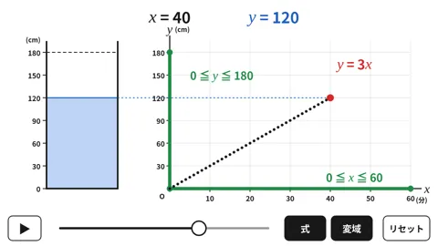
時間と水の深さ y = 3x
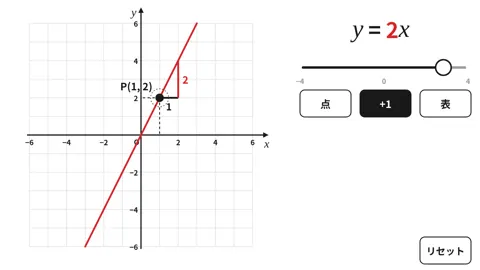
a を変えて y = ax を見る
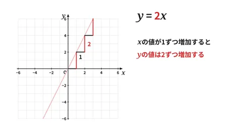
表 → 点 → 直線
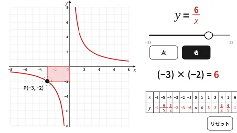
点Pを動かして xy = a
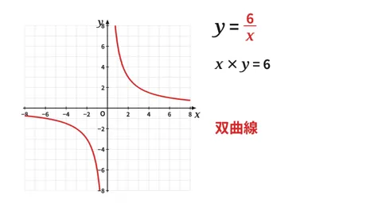
長方形の面積から双曲線へ
平行・回転・対称移動
ドラッグで像を動かす
垂直二等分線・角の二等分線・垂線
弧の長さと面積
面を1回転させて立体に
角度を変えて立体をつくる
側面のおうぎ形の中心角
見取図と立面図・平面図
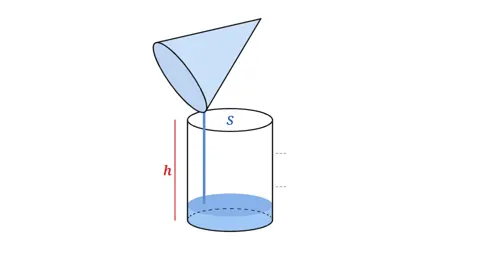
V = ⅓Sh
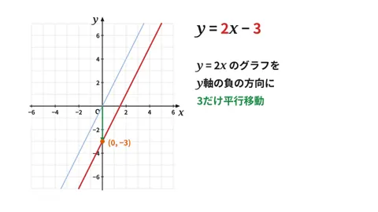
y = 2x から y = 2x + 3 へ
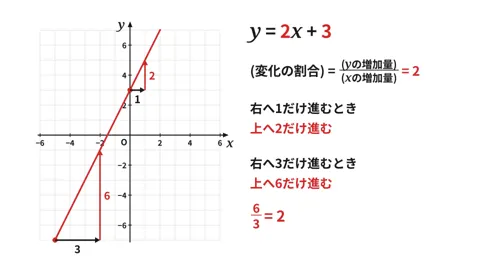
右へ1、上へ a
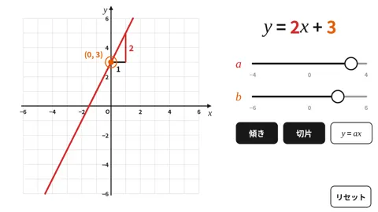
a と b を変えて見る
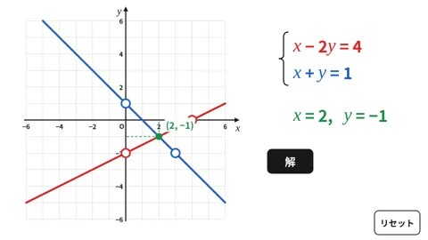
2直線の交点が解
点Pの移動と△APDの面積
対頂角は等しい
同位角・錯角を見る
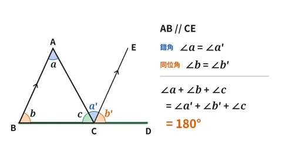
内角の和は180°
180° ×（n − 2）
外角を集めると360°
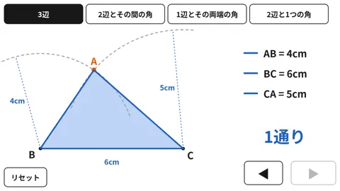
作図して1通りに決まるか
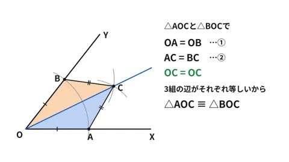
△AOC ≡ △BOC
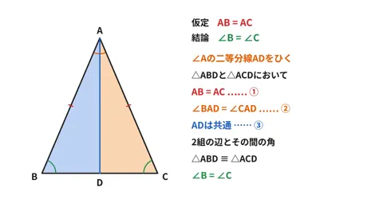
折り重ねて ∠B = ∠C
頂点を動かして5つの条件
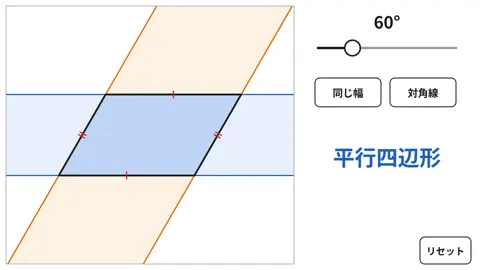
重なりはどんな四角形？
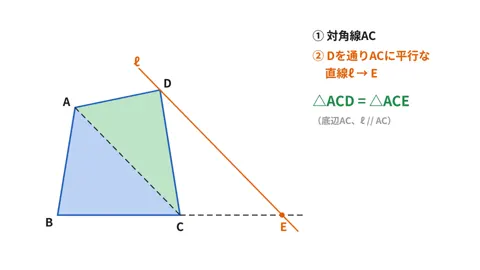
底辺と高さが同じなら面積も同じ
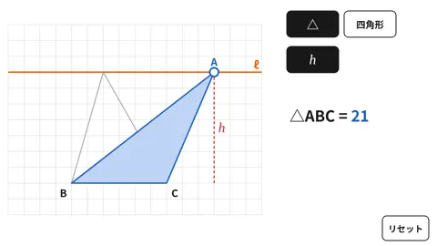
頂点を動かしても面積は同じ